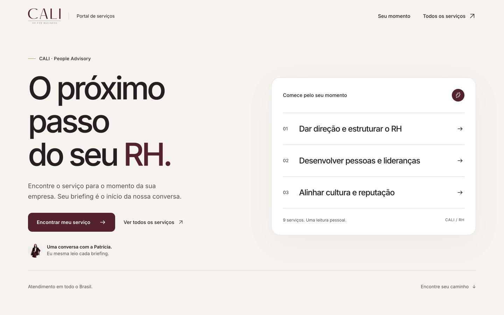

A · Precisão
Abrir versão ↗Clareza de produto, espaço e navegação direta. A escolha do serviço vira o elemento central.
Abra cada versão para navegar.
Mesmos serviços. Três direções de identidade.

Clareza de produto, espaço e navegação direta. A escolha do serviço vira o elemento central.
A marca ocupa a tela. Contraste, tipografia e bordô dão mais força à primeira impressão.
A Patrícia aparece desde o início. Fotografia e composição contemporânea reforçam a relação pessoal.
Estudo de identidade e abertura da LP. As seções seguintes permitem experimentar o percurso até os briefings. Nenhuma destas opções substituiu a página em produção.